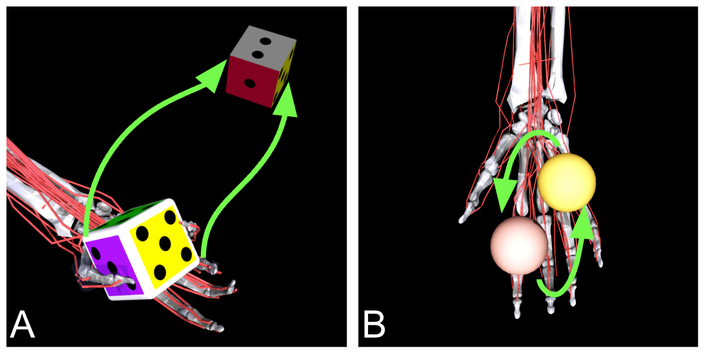
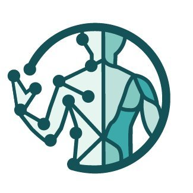

About me
I build embodied AI systems grounded in neuroscience, with a focus on how the brain and body coordinate movement.
I am CTO & Co-Founder of MyoLab, where I develop models for learning and controlling complex motor behavior.
Previously, I led AI programs at Meta AI (FairScale, xFormers, MyoSuite) and directed interdisciplinary teams at IBM Research, working across machine learning systems and embodied intelligence.
My work includes first-author publications in the most prestigious science journal (Nature, Science, Cell) and machine learning conference (NeurIPS, ICML), as well as building scalable systems that bring research into real-world use.
Selected Work & Projects
A selection of projects, benchmarks, and community efforts across embodied AI, machine learning systems, and neuroscience.
2025
 |
NeurIPS-MyoChallenge 25 -- Towards Human Athletic Intelligence
Vittorio Caggiano, et al Website | code |
2024
 |
NeurIPS-MyoChallenge 24 -- Physiological Dexterity and Agility in Bionic Humans
Vittorio Caggiano, et al Website | code |
2023
 |
NeurIPS-MyoChallenge 23 -- Towards Human-Level Dexterity and Agility.
Vittorio Caggiano, et al Website | code |
 |
MyoDex: A Generalizable Prior for Dexterous Manipulation
Vittorio Caggiano, Sudeep Dasari, Vikash Kumar Webside | code |
 |
SAR: Generalization of Physiological Dexterity via Synergistic Action Representation
Cameron Berg, Vittorio Caggiano, Vikash Kumar Website | Publication | code |
 |
MyoSuite Web Demo:
An interactive demonstration of the Musculoskeletal Models of the MyoSuite framework.
Vittorio Caggiano, Vikash Kumar MyoSuite Demo | code |
2022
 |
NeurIPS-MyoChallenge: Learning contact-rich manipulation using a musculoskeletal hand.
Vittorio Caggiano, Huawei Wang, Guillaume Durandau, Seungmoon Song, Yuval Tassa, , Massimo Sartori, Vikash Kumar Challenge website | Twitter |
|  |
MyoSuite: An embodied AI platform that unifies neural and motor intelligence Vittorio Caggiano, Huawei Wang, Guillaume Durandau, Massimo Sartori, Vikash Kumar Meta Tech@ blog | code |
 |
MyoSim: Fast and physiologically realistic MuJoCo models for musculoskeletal and exoskeletal studies Huawei Wang*, Vittorio Caggiano*, Guillaume Durandau, Massimo Sartori, Vikash Kumar code |
|
xFormers: A modular and hackable Transformer modelling library
Benjamin Lefaudeux, Francisco Massa, Diana Liskovich, Wenhan Xiong, Vittorio Caggiano, Sean Naren, Min Xu, Jieru Hu, Marta Tintore, Susan Zhang code |
2021
 |
Fully Sharded Data Parallel: faster AI training with fewer GPUs
Myle Ott, Sam Shleifer, Min Xu, Priya Goyal, Quentin Duval, Vittorio Caggiano Facebook Engineering blog | code | docs |
|
FairScale: A general purpose modular PyTorch library for high performance and large scale training
Mandeep Baines, Shruti Bhosale, Vittorio Caggiano, Naman Goyal, Siddharth Goyal, Myle Ott, Benjamin Lefaudeux, Vitaliy Liptchinsky, Mike Rabbat, Sam Sheiffer, Anjali Sridhar, Min Xu code |